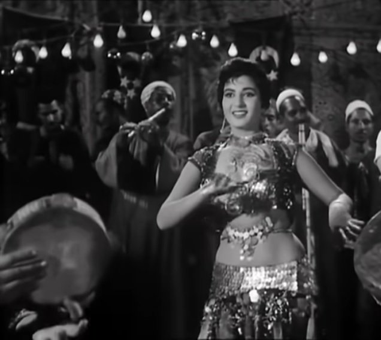

لقطة من فيلم "تمر حنة" (1957) بطولة نعيمة عاكف وإخراج حسين فوزي
في أقل من أسبوع تطل علينا ثلاث مقالات مختلفة، وليست مختلفة في الوقت نفسه، عن الرقص الشرقي وممارسيه من الراقصات الحاليات (وتحتل صافينار المساحة الأكبر ما بين هؤلاء) والراحلات، وهؤلاء الأخيرات هن "الأيقونات" كما أطلق عليهن أحد الكتاب في محاولة للتعاطي مع ذلك الفن وتقديم وجهات نظر عكست جميعها وضع الأزمة التي تمر بها النخبة مع ذلك الفن.
وتبقى الأسئلة والأفكار المطروحة كلها تدور في فلك أزمة جسد المرأة، فهو جسد مأزوم بتعريفه، من يمتلكه ومن يمتلك حق الوصول إليه و"استخدامه"؟، ولا تخرج هذه الأسئلة عن وضعية هذا الجسد والذي يتم حصره كموضع نزاع للسلطة الأبوية بأشكالها الفردية (سلطة الزوج، أو الأب أو الأخ أو….) وأشكالها المجردة، الدولة التي تراعى وتحافظ على الآداب العامة فيما يخص علاقات المجتمع ككل بجسد المرأة من خلال تنظيم تلك العلاقات عن طريق قوانين الآداب العامة وما يخالفها حسب التعريف (الدعارة، الفجور، الأفعال الفاضحة، المجون،….) وقوانين الأحوال الشخصية (الزواج، الطلاق، الميراث،….)
وفي فوضى الهلع حول جسد المرأة وكيف يمكن الاستيلاء عليه أو الوصول إليه أو قمعه أو قهره أو خطفه أو انتهاكه أو استباحته أو الاستمتاع به.. يضيع تماما أي ملمح من الرقص كظاهرة آدائية أولا وأخيرا.
وبالطبع لا يمكن تجاهل تلك الأزمة وهي تلقي بظلالها على أي محاولة لفهم الرقص الشرقي كظاهرة اجتماعية ولكن كظاهرة فنية تستحق التأمل والتدبر فيما أنتجته من ميراث شديد الثراء، فلا يصح ولا يجوز أن يبقى الرقص رهينة خيالات شبق المراهقين أو تعنت السلطة الأخلاقية للنظام الأبوي وولايته الأخلاقية. فبعيدا عن الاختيارات الأخلاقية لكل من المؤديات والمشاهدين، تبقى هناك عناصر معينة تخلق تلك الظاهرة والتي من الممكن جدا تتبعها وتحليلها للوصول لفهم أوسع وأعمق من "الرقص فن هادف" أو وصف نعيمة عاكف بـ"الفراشة".
يكاد يكون الشاغل الأوحد لكل من تناول ظاهرة الرقص الشرقي بممارسيه هو رفض الجانب الإيروسي المحتمل في أي فعل جسدي (فليس الرقص فقط الذي من الممكن أن يكون له جانب إيروسي – يكاد أي فعل يخص الجسد أن يقع على شفا الإيروسية) أو تمجيده بشكل ساذج ومراهق لا يخرج عن شبق شعب محروم من تكوين أي علاقة بجسد المرأة لا تخرج عن إطار التملك الجنسي (فحتى إدوارد سعيد لم يسلم من تصورات المراهق حينما تناول مسيرة تحية كاريوكا الفنية فأسرد في كتاباته عن شغفه بها كمراهق كأول ملمح أو مدخل لفهم واستعياب الرقص الشرقي).
وبعيدًا عن رفض ذلك المبدأ أو ذاك، أود أن أسجل عدة ملاحظات حول طبيعة النظر إلى ظاهرة الرقص الشرقي بعيدًا عن الجدل الأخلاقي لتبريره كفعل غير جنسي أو تمجيده كتعبير حقيقي عن الرغبات الدفينة للشعب المقهور.
أولا نسق خارج المأسسة؟
تطور الرقص الشرقي في القرن التاسع عشر والقرن العشرين في تلك الثنائية العجيبة بين تبني ذلك التعبير الجسدي الأدائي المُحَمّل بمعانٍ كثيرة وبين عدة إشكاليات مرتبطة بعلاقة المرأة وجسدها بالسلطة الأبوية وتجسدها في الدولة الحديثة. وترتب على ذلك تجاهل الدول في أحسن حالاتها لتلك الظاهرة أو تقنينها تحت عناوين غريبة وغير مفهومة (تسجيل الكباريهات تحت رخصة "الملاهي" وليس ضمن فنون الآداء على سبيل المثال).
ظل الرقص خارج سلطة مؤسسات الدولة والتي كانت (لم تعد كذلك وإن ظل هناك ارتباط معين بجماليات معينة عند شرائح معدودة في المجتمع) تنتج الخطاب الأوحد في تعريف ما هو الفن "المقبول" وما هو الفن "الأصيل"، (حتى فريدة فهمي لم تُعَرف نفسها أنها "رقاصة" بالمعنى المتعارف عليه ولكن تم تجاوز تلك الأزمة بربط كل مساهمات فرقة رضا تحت ما يسمى "الحفاظ على التراث" أو إحياؤه أو تجديده).
وذلك التهميش الذي قد يبدو لنا سلبيًا أو فيه نوع من التجاهل عن عمد، ويشي أيضا بصراع حول مكانة ومعنى الرقص الشرقي، إلا أنه أعطى ذلك الفن هامش كبير من الحرية. فلم يكن في يوم من الأيام مجلس أعلى للرقص الشرقي يحدد ما هو الأسلوب الأوحد المقبول. ولم تقنن أساليب ومناهج معينة لتعليمه أو تعريفه أو تأريخه كظاهرة فنية.
بالطبع كانت هناك "أسطوات" ولهن "مدارس" ومريدات ولكن ظلت تلك السلطة "غير رسمية" وغير ملزمة لكل محترفات الرقص. فظهرت أساليب و"مقتربات" في الرقص شديدة التباين والاختلاف: بين استعارات سامية جمال للباليه ورقصات أمريكا اللاتينية والكلاسيكية المستجدة لتحية كاريوكا والتزامن المثالي بين الموسيقى والآداء لنعيمة عاكف وغيرهن كثيرات.
وإذا كانت هناك راقصة وصلت لتلك المكانة في تعريف ما هو الرقص ومن هي الراقصة "الحقيقية" فهي بديعة مصابني، التي استحقت بجدارة لقب "أم الرقص الشرقي" لإسهاماتها ليس فقط في إعادة تعريفه كنوع من فنون الأداء ولكن لأن جميع من احترفن الرقص الشرقي لمدة ثلاثين عاما أو أكثر، في بدايات القرن العشرين، تعلمن أو تأثرن بها بشكل أو بآخر.
ممارسة لا تاريخية
الجانب الثاني في إشكالية تناول الرقص الشرقي هو تناوله كظاهرة "لا تاريخية" أو أسوأ من ذلك كظاهرة متجاوزة للتاريخ. بمعنى أن الرقص الشرقي كظاهرة فنية واجتماعية ليس بمعزل عن مجمل التطورات التي تحدث في السياق الذي هو جزء منه.
وإدماج الرقص الشرقي ضمن تلك التطورات غيّر تماما، ليس فقط من محتواه (فقدمت بديعة لأول مرة "كورال راقصات" خلفها هي، كراقصة أولى، مستعيرة تلك الفكرة من الباليه)، ولكن أيضًا في شكل تقديمه (فاخترعت بديعة بدلة الرقص كما نعرفها الآن حيث لم يكن لها وجود قبل ذلك)، وكيف يتم استقباله (لم يعد حكرًا على المناسبات أو المجال العام أو حتى الخاص ولكن أصبح جزء من صناعة الترفيه والتسلية بعيدًا عن أصوله التي ارتبطت بالمجموعات المهمشة مثل الغوازي والغجر على سبيل المثال).
إن تغير الرقص الشرقي بهذا الشكل الجذري كان نتيجة طبيعية لتأثره بالسياق المحيط به وبالتالي لا يمكننا الآن وبعد عدة عقود من وفاة بديعة أن نفترض أن هذا الشكل من الرقص الشرقي هو الشكل الأزلي الذي لا يقبل التغيير والذي يمكن أن نتعامل معه كمنتج لحقبة معينة لها خصائص ثقافية واجتماعية واقتصادية شكّلت الاختيارات العملية والفنية التي انتهجتها شخصية مثل بديعة أو أيا من تلاميذها.
منطق الآداء
لعل من أكثر النقاط إثارة للجدل هي فكرة "منطق الآداء". وأقصد بمنطق الآداء مجموع العلاقات التي تحكم عناصر الآداء مع بعضها البعض. وفي هذه الحالة، على سبيل المثال لا الحصر، عناصر الرقص الشرقي هي المؤدية، والحركة، والجمهور، والموسيقى والإيقاع، والمجال الحركي.
ولأن الرقص الشرقي هو آداء مبني أساسا على الارتجال فهو بتعريفه يضع احتمالات تقريبا لا نهائية لتلك العناصر وعلاقاتها ببعضها البعض. وفي حين أن تلك الطبيعة "المرنة" تعطي الرقص الشرقي درجة من التشاركية الحقيقية بين جميع العناصر (المؤدية مع الموسيقى أو الجمهور مع المؤدية أو المؤدية مع الفراغ الحركي و…..) يتم إغفال كل هذا التعقيد من أجل اختزاله في مجادلات الأصالة الثقافية أو فكرة الفن الهادف أو أيا من تلك المصطلحات التي تغطي على أي ملمح يعبر عن حجم هذا التعقيد.
آداء حي مرتجل
في حين أن معظم فنون الرقص والموسيقى هي فنون آداء حي، ينفرد الرقص الشرقي بأنه آداء يعتمد على الجمهور المتواجد في لحظة إنتاجه. بمعنى أنه من الممكن للموسيقي أن يؤلف لجمهور متَخَيل، إلا أن المؤدية لا تقوم بالحركة إلا للجمهور المتواجد في تلك اللحظة، وبالتالي هو آداء لا يمكن فهم حقيقته خارج سياقه. لأنه آداء مرتجل، فهو وليد تلك اللحظة حين تلتقي عناصره مع بعضها البعض و "يشترك" الجميع في خلق ذلك المنتج المركب.
وبناء على ذلك لا يمكن تمييز المؤدية بأنها هي التي تخلق المنتج الفني أو الأسلوب. بل وبالعكس تماما، وهذا هو المثير للبكاء والضحك في الوقت نفسه، أن طبيعة الرقص الشرقي كعلاقة مشاهدة بين مؤدية وجمهور هي التي تحدد حدود تلك العلاقة وما يتوقعه الجمهور من المؤدية.
فعلى سبيل المثال كلما طالب الجمهور المؤدية بنوع الآداء الذي يعلي من الوقع الجنسي للحركة لا يمكننا أن نفترض أن هذا قرار المؤدية بمفردها. فهؤلاء الذين ينعون ببالغ الأسى "راقصات الزمن الجميل" يتناسون أن الراقصة لا ترقص في فراغ اجتماعي أو سياسي أو اقتصادي.